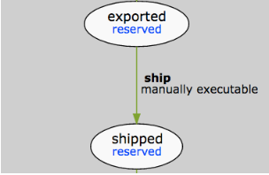
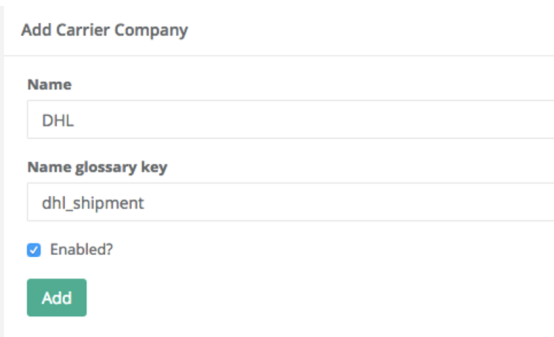
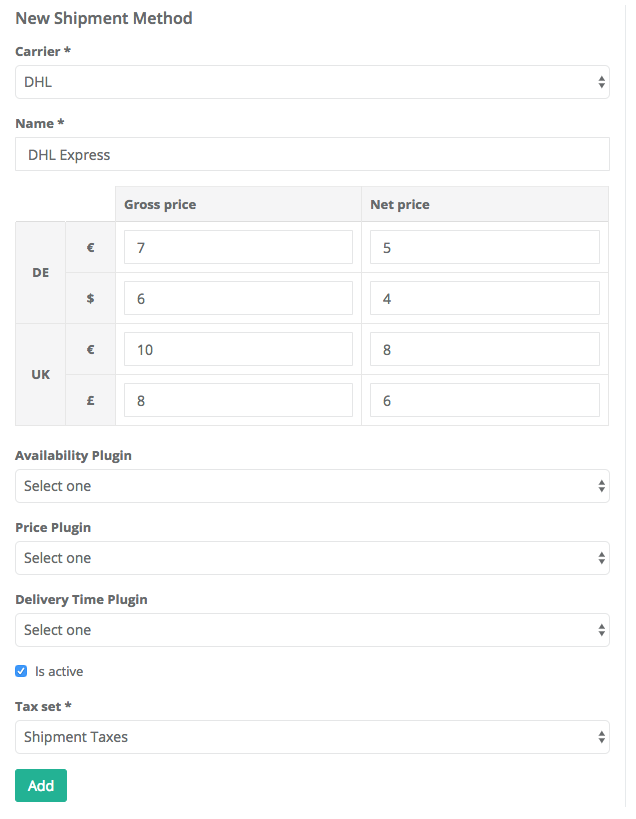
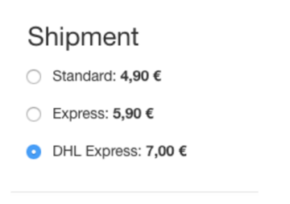

HowTo - Add a New Shipment Method 2.0
This article describes the steps to add a new shipment method, without integrating with the shipment provider.
In this tutorial we’ll consider the case when you need to add a new shipment method, without the need to integrate it with the shipment providers system.
What’s important for this situation is to have multi-currency prices attached to the shipment method and also to have the correct tax set linked to it. Also, the shipevent should be manually triggerable from the Zed Admin UI.
Setting Up the State Machine
The state machine that handles orders that use this shipment method needs to use a manual event for shipping, so that it can be triggered from the Zed Admin UI.

The corresponding XML for this transition would be:
<states>
<state name="exported" reserved="true"/>
<state name="shipped" reserved="true"/>
//..
</states>
<transitions>
<transition happy="true">
<source>exported</source>
<target>shipped</target>
<event>ship</event>
</transition>
//..
</transitions>
<events>
<event name="ship" manual="true"/>
//..
</events>
Adding a New Shipment Method
To add a new shipment method:
- In the Zed Admin UI, navigate to the Shipmentsection and click on Add new Carrier Company .
- Specify a name for the carrier company and the corresponding glossary key for having a localized name.
- To use this carrier company in the shop, select
Enabledin the check-box.

Now that we have a new shipment carrier, we can add a new shipment method to it.
To add a new shipment method to a carrier:
- Click "Add new Shipment Method".
You will be redirected to the "Add a new shipment method" dialog. - Select the carrier you created in the previous step.
- Add the name and store/currency specific net and gross prices.
- Mark it as "Active".
- Select the corresponding tax set.
- Click "Add Shipment Method".

The shipment methods with price are retrieved depending on your preconfigured price mode + current store and the currently selected currency.
Shipment methods might be excluded if their active flag is off, connected AvailabilityPlugin plugin excludes them, or it would have a price as NULL.
In this current example, the new shipment method is available in the shop for DE store, EUR currency and gross price mode as 7 EUR.

See also:
- Shipment Overview
- Shipment
- Creating a Carrier Company - Shipment
- Creating a Carrier Company - Shipment
- Shipment Methods Plugins
Last review day: Oct. 25th, 2017